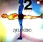
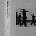
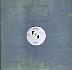
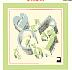
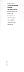

FAC 101
|
Additional Notes:
Disused warehouses in Manchester. Tony Wilson wanted to convert them into flats, but it never happened.
|  |
FAC 102
|
Contents:
7": UK 1984 (Factory FAC 102) [white label promo] 4:53 Atom Rock (Edit) 4:35 Triangle (Edit) 12": UK 1984 (Factory FAC 102) * 6:42 Atom Rock 6:58 Triangle 12": UK 1985 (Factory FAC 102R) ** 7:21 Atom Rock (Mark Kamins New York Remix) 6:10 Atom Rock (Mark Kamins Dub Mix) * Record titled '2 From Quando'. ** In stickered red 'A Factory Records Giant Single' custom bag.
Additional Notes:
FAC 103
|
Contents:
7": UK 1984 (Factory FAC 103) [promo] 3:54 Thieves Like Us (edit) 3:52 Lonesome Tonight (edit) 12": UK 1984 (Factory FAC 103) 6:36 Thieves Like Us 5:11 Lonesome Tonight
Additional Notes:
12" was released with 'Murder' as the B-side in some countries.
|
|
FAC 104
|
Additional Notes:
A broadcast of Channel 4's "The Tube" from The Hacienda, featuring Madonna's first UK performance, and included an interview with Tony Wilson and Paul Morley, as well as 'The Factory All Stars' (including members of New Order, Quando Quango, The Wake, ACR, 52nd Street, etc) doing 'Cool As Ice', 'Shack Up', 'Confusion', and 'Love Will Tear Us Apart'.
T-shirts, posters, and booklets were also produced for this event.
FACT 105V
|
Contents:
VHS: UK 1985 (Factory FACT 105)
50:00 {black & white movie}
Additional Notes:
About a mental hospital, featuring Graham Massey, Joanne Hill, and Patrick Nyland, from Pressure Productions. Actually released through IKON.
Soundtrack by Biting Tongues (see below) shares catalogue number.
FACT 105
|
Contents:
LP: UK 1985 (Factory FACT 105) 2:44 Feverhouse Part 1 2:35 Feverhouse Part 2 3:36 Feverhouse Part 3 8:02 Feverhouse Part 4 3:23 Feverhouse Part 5 3:10 Feverhouse Part 6 2:20 Feverhouse Part 7 1:40 Feverhouse Part 8 3:30 Feverhouse Part 9 2:30 Feverhouse Part 10
FAC 106
|
Contents:
7": UK 1984 (Factory FAC 106)
3:04 Tell Me
2:57 Tell Me Theme
~ It's a Start Jackie!
FAC 107
|
Contents:
7": UK 1984 (Factory FAC 107)
2:52 All At Once
2:38 National Pastime
~ When a Man's Mind!
~ Turns to Romance!
FAC 108
|
Contents:
12": UK 1984 (Factory FAC 108) 4:34 Looking From a Hilltop * 8:04 Looking From a Hilltop ** ~ Zen * Restructure from FACT 90. ** Megamix from FAC 108A.
FAC 109
|
Additional Notes:
A 12" slated for release by the Durutti Column cellist that was never released.
FACT 110
|
Contents:
LP: UK 1985 (Factory FACT 110) LP: AU 1985 (Factory FACT 110) * CS: UK 1985 (Factory FACT 110C) [boxed] ** 6:19 Genius 5:50 Go Exciting 5:05 Happy Boy 5:38 Rebel 5:01 This Feeling 4:36 S.T. 5:51 40 Dreams 4:20 Low Rider ?:?? Love Tempo ** * Australian copies came free with FACT 110/12 below. ** With inserts. 12": AU 1985 (Factory FACT 110/12) ?:?? Love Tempo (Remix) ?:?? Atom Rock (Remix) ~ Watch the Woofer.
Additional Notes:
Apparently 'Pigs and Battleships' is a 1961 Shohei Imamura movie about "the damaging effects of American military presence and the mutual exploitation of the low life yakuza gangsters."
FAC 111
|
Contents:
CS: UK 1984 (Factory FAC 111D) * 12": UK 1986 (Factory FAC 111) 7:59 You Hurt Me 5:43 You Hurt Me (version) 6:37 But Now Your Flesh Lies Rotting In Hell * Strange catalogue number (would've expected FAC 111C). Includes inserts. The tape was a semi-official promotional device.
|  |
FAC 112
|
Contents:
7": UK 1984 (Factory FAC 112P) [Promo] * 3:52 Life's A Scream (Edit) 4:11 There's Only This (Edit) 12": UK 1984 (Factory FAC 112) ** [Dance Side] 6:31 Life's A Scream [Trance Side] 4:18 There's Only This * Includes photo and ACR envelope with biography. ** Sleeve issued with paper sash, known as an 'obi'.
Additional Notes:
FAC 113
|
Contents:
7": UK 1985 (Factory FAC 113) 2:54 Of the Matter 2:54 Of the Matter ~ All This Time * Different mix.
FAC 114
|
Contents:
12": UK 1984 (Factory FAC 114) 1:50 Goodbye 6:00 The Room 3:37 A Little Mercy 7:44 Silence 4:35 E.E. 1:05 Hello
Additional Notes:
Included on FACD 84.
FAC 115
|
Additional Notes:
Onion skin paper with red and black (!) thermographic printing. Grey envelope with black printing. Both sport the 1984 logo.
|  |
FAC 116
|
Contents:
12": UK 1985 (Factory FAC 116) 5:29 Deep Sleep 3:47 Lost Again 5:04 Wave
Additional Notes:
In F-dot die-cut custom bag.
FAC 116
|
Contents:
12": UK 1985 (Factory FAC 117) 6:34 Smiling Monarchs 5:08 Benway's Carnival

|
FAC 118
|
Contents:
7": UK 1984 (Factory FAC 118) [white label promo] 3:44 Can't Afford to Let You Go (Edit) 4:14 Can't Afford to Let You Go (Disorganised Mix) ~ Half a Tennis Ball Head ~ Mom & Pauline 12": UK 1984 (Factory FAC 118) 6:50 Can't Afford to Let You Go 9:56 Can't Afford to Let You Go (Unorganised Mix) ~ Marcia, George & Christian ~ Kev & Sheila. Red Stock Close Gang
FAC 119
|
Contents:
7": UK 1985 (Factory FAC 119) 2:48 Hymn From A Village 3:03 If Things Were Perfect
FAC 120
|
Additional Notes:
2 Badges (crimson and black) also issued (200 of each) with this number.
See also FACTUS 21.
FAC 121
|
Additional Notes:
A series of London premieres plus a leaflet. Also referred to as 'From the North'. Factory bands, Hacienda live videos, Peter Saville design and Hacienda Hairdressers 'Swing' (FAC 98) reside for 5 days at Hammersmith's Riverside Studios 13-18/8/84.
Also a poster, probably the best Factory ever did. It has the same basic design as the leaflet, printed in gold on a coral red background.
FAC 122
|
Contents:
7": UK 1985 (Factory FAC 122) 3:55 Optimism 3:09 Better
FAC 123
|
Contents:
7": UK 1985 (Factory FAC 123)
7": UK 1985 (Factory FAC 123-7) [promo]
3:47 The Perfect Kiss (edit)
3:00 Kiss of Death (edit)
~ That's Soul Folks!
~ Feel It's a Hottie
12": UK 1985 (Factory FAC 123)
8:45 The Perfect Kiss
7:00 The Kiss of Death
1:23 Perfect Pit
~ All these crabs
~ Are making me itch
Additional Notes:

|
FAC 124
|
Contents:
12": UK 1985 (Factory FAC 124) 6:07 No More Silence 3:42 No More Silence (Short Version) 4:38 Chopper's Delight

|
FACT 125
|
Contents:
VHS: UK 1984 (Factory FACT 125)
Additional Notes:
Christmas video of Factory Acts discussed and presented by Claude Bessy. Snippets/mentions include James ("The're vegans, they have a lot of liver trouble..."), Section 25, Abecedarians, Shark Vegas, Streetlife, Thick Pigeon, 52nd Street ("Disco Cult"), Quando Quango, A Certain Ratio ("They have a new single and, well, we know its great" [Life's A Scream]), The Wake ("They're recording a new mini album - mini albums are a new leisure device..."), Kalima, The Jazz Defektors ("They spend a lot of money in the Hacienda"), Stockholm Monsters ("Heavy"), Durutti Column, Life, Marcel King, RF&TP, Red Turns To, New Order, and some of Bessy's work ("but who cares").
Additional Notes:
FAC 126
|
Additional Notes:
Infosheet/Poster/Event of Alan Erasmus's trip to the USSR.
Factory's first move into the field of Classical music. Alan Erasmus went to Moscow to contract young Russian classical musicians. The project failed because Factory's Russian contact in the UK was kicked out of the country.
FAC 127
|
Contents:
12": UK 1985 (Factory FAC 127) 4:21 Trickery 6:47 Land of Dreams 3:39 Sparkle 4:13 So Sad ~ Loos Shoes, Tight Pussy * ~ ...And a Warm Place to Shit * * The running grooves were, not surprisingly, struck out.

|
FAC 128
|
Contents:
7": UK 1985 (Factory FAC 128) [White Label Promo] [Dance Side] 3:23 Wild Party (Version) * [Another Dance Side] 3:54 Sounds Like Something Dirty (Edit) CS: UK 1985 (Factory FAC 128C) 4:12 Wild Party 6:52 Sounds Like Something Dirty ?:?? Life's a Scream (Live) ** ?:?? Force (Live) ** ?:?? Wild Party (Live) ** 12": UK 1985 (Factory FAC 128) 4:12 Wild Party 6:52 Sounds Like Something Dirty ~ What Do You Think Of That Like * Possibly the same version as that on the Letter to Brezhnev OST. ** Live tracks from BBC Saturday Live session.
Additional Notes:
Promo 7" comes with a similar bio to the FAC 112 promo. Bio is updated and this time printed on orange paper (the FAC 112 bio is on purple paper).
FAC 129
|
Contents:
12": UK 1985 (Factory FAC 129) 3:38 Delightful 4:17 This Feeling 3:40 Oasis
FACT 130
|
Contents:
LP: UK 1985 (Factory FACT 130) 6:01 O Pamela 3:37 Send Them Away 3:22 Sail Through 7:17 Melancholy Man 2:50 World Of Her Own 4:42 Torn Calendar 4:14 All I Asked You To Do 6:58 Here Comes Everybody ~ Don't Even Think It!
Additional Notes:
A boxed cassette (light brown) edition as FACT 130C was scheduled for release, but didn't make it.
FAC 131
|
Additional Notes:
Poster listing future releases: 'It Isn't Only Lowlife Who Record for Factory'. Subtitle is 'The Album Collection 84/85 From Factory by Way of Rough Trade/The Cartel'.
Lists FACT 80, FACT 85 (as 'Two Lonely Cowboys'), FACT 84, FACT 95, FACT 100, FACT 110, and FACT 130.
FAC 132
|
Additional Notes:
Single never released (the unreleased Factory 7" single of FBN 45). Apparently Factory UK were to do a 12", 'Crazy Wisdom' (as FAC 132T) with Factory benelux doing a 7" (FBN 45). Then the 12" release was transferred to Factory Benelux, who scrapped the 7" and issued only the 12". So it was Factory Benelux who scrapped the 7", not Factory UK. And yet...
FACT 400 has a release (?) date of May 1985, so maybe there were some promo's made?
FAC 133
|
Contents:
7": UK 1985 (Factory FAC 133) 3:25 Sub-culture 3:34 Dub-vulture 12": UK 1985 (Factory FAC 133) 7:26 Sub-culture 7:57 Dub-vulture
Additional Notes:
Apparently Peter Saville did not want to design a sleeve for the record, because he thought the remixes sucked!
FAC 134
|
Contents:
12": UK 1985 (Factory FAC 134) 6:51 Trouble Hand 3:23 Panorama 4:53 Meat Mask Separatist 5:30 Boss Toyota Trouble 1:56 Probate
|  |
FACT 135
|
Contents:
LP: UK 1986 (Factory FACT 135) *
[East]
6:04 Flight
2:46 Do the Du
2:37 And Then Again
3:02 The Fox
3:10 Blown Away
[West]
6:53 Sounds Like Something Dirty
6:32 Life's A Scream
4:17 There's Only This
4:15 Wild Party
~ Stonked Again
~ One More Time
7": UK 1986 (Factory 7 FAC 135)
3:13 Shack Up
3:11 The Thin Boys
CS: UK 1986 (Factory FACT 135C) [boxed] **
6:04 Flight
2:46 Do the Du
2:37 And Then Again
3:02 The Fox
3:13 Shack Up
3:11 The Thin Boys
6:53 Sounds Like Something Dirty
6:32 Life's A Scream
4:17 There's Only This
4:15 Wild Party
* Came packaged with 7 FAC 135.
** With inserts.
Additional Notes:
FAC 136
|
Additional Notes:
Signal green tape with silver logo and 'FAC 136'.
FAC 137
|
Contents:
7": UK 1985 (Factory FAC 137) [white label promo] ?:?? Genius (Edit) ?:?? Rebel (Edit) 12": UK 1985 (Factory FAC 137) 6:23 Genius 5:43 Rebel 12": UK 1985 (Factory FAC 137) [white label promo] 6:23 Genius ?:?? This Feeling
Additional Notes:
The 137 number is shared with the Shorts video (see below)
FACT 137
|
Contents:
VHS: UK 1985 (Factory FACT 137) BETA: UK 1985 (Factory FACT 137) 3:18 DURUTTI COLUMN - Prayer ?:?? STOCKHOLM MONSTERS - The Longing ?:?? THE WAKE - Talk About the Past ?:?? ROYAL FAMILY & THE POOR - British Empire 3:19 SECTION 25 - Back to Wonder 4:37 SECTION 25 - Looking From a Hilltop ?:?? KALIMA - The Smiling Hour ?:?? JAZZ DEFEKTORS - Hanki Panki ?:?? QUANDO QUANGO - Tingle ?:?? 52ND STREET - Can't Afford (To Let You Go) ?:?? NEW ORDER - Blue Monday * * Original "Blue Monday" promo video.
FAC 138
|
Contents:
12": UK 1985 (Factory FAC 138) 1:55 What's the World 2:47 Folklore 1:47 Fire So Close 3:04 If Things Were Perfect 2:49 Hymn From A Village ~ Is anybody there?
FAC 139
|
Contents:
7": UK 1986 (Factory FAC 139) [picture disc] 4:43 We Love The Moon 4:13 White Stains ~ Hymn to Kali No. 1 ~ Don't Look Down
Additional Notes:
When the band parted with Factory, they took the stock of FAC 139 and sold them in a numbered picture sleeve.

|
FACT 140
|
Contents:
LP: UK 1986 (Factory FACT 140) 4:24 Visions 5:15 Sex Goddess 4:15 White Stars 5:36 Living Room Alchemy 6:01 Transparent 5:34 Pagan Way 5:44 Heartbeat 4:43 We Love the Moon 1:30 Conspire (To Breath Together) ~ Don't Buy it, Steal It ~ Losing the Human Form, Again
Additional Notes:
|  |
FAC 141
|
Additional Notes:
Waxed white paper, envelopes, visiting cards and additional stationary with thermographic black printing and embossed logo.
Lists directors as: Alan Erasmus, Tina Simmons, and Anthony Wilson; Consultant: Peter Saville; Registered in England No: 1524272; VAT No: 3832 66632
FAC 142
|
Contents:
12": UK 1986 (Factory FAC 142) 3:42 Freaky Dancin' 3:58 The Egg 12": UK 1986 (Factory FAC 142) 6:47 Freaky Dancin' (Live) 4:57 The Egg (Mix) 5:13 Freaky Dancin'
Additional Notes:
There is an official T-shirt with the 'Freaky Dancin' logo and the catalogue number.
FAC 143
|
Contents:
7": UK 1986 (Factory FAC 143)
4:19 Shellshock (edit)
3:55 Thieves Like Us (instrumental edit)
~ So Hip It Hurts
~ Watch Out for the Dwarf
12": UK 1986 (Factory FAC 143)
9:40 Shellshock
7:31 Shellcock
~ So Hip It Hurts
~ Watch Out for the Dwarf
Additional Notes:
FAC 143 also allocated to promo video as seen on FACT 225.
FACT 144
|
Contents:
LP: JP 1985 (Factory Japan / Columbia FACT 144 / XY7356AX)
2:22 Sketch for Summer
4:50 Sketch for Dawn
2:16 Mercy Theme
10:04 A Little Mercy
6:37 Dream of a Child
3:45 Mercy Dance
4:40 The Room
8:12 Blind Elevator Girl
2:50 Tomorrow
3:04 Belgian Friends
2:51 Self Portrait
CD: UK 1985 (Factory FACD 144) *
CD: UK 1998 (Factory Once FACDO 144 / London 556 038-2) **
2:22 Sketch for Summer
4:50 Sketch for Dawn
2:16 Mercy Theme
10:04 Little Mercy
5:35 Jacqueline *
6:37 Dream of a Child
3:45 Mercy Dance
4:40 The Room
4:09 E.E.
8:12 Blind Elevator Girl
2:50 Tomorrow
3:04 For Belgian Friends
7:45 Missing Boy
2:51 Self Portrait
0:54 {audience noise} *
4:15 Our Lady Of The Angels **/***
4:00 White Rabbit **/***
6:49 When The World (Newson Mix) **/****
VHS: UK 1986 (Factory FACT 144V) [PAL]
BETA: UK 1986 (Factory FACT 144B) [PAL]
2:22 Sketch for Summer
4:50 Sketch for Dawn
10:04 Little Mercy
3:45 Mercy Dance
4:40 The Room
4:09 E.E.
8:12 Blind Elevator Girl
3:04 For Belgian Friends
7:45 Missing Boy
* Factory's first CD!
*** From FAC 184
**** From FACD 194
Additional Notes:
Live in Tokyo, Japan.
FAC 145
|
Additional Notes:
This is a cardboard CD sleeve (a la the 'car carry cases'), in blue with a huge silver embossed Factory logo and a molecule-design by PSA. The sleeve includes a cardboard CD with a Xmas message and is signed by the Factory staff.
"The chemical symbol is in fact water and hence snow. 1985 had seen the dawn of the CD, 'Power Corruption and Lies' coming out of the Denon CD pressing plant outside Tokyo. This was Factory's way of celebrating the fact. 300 produced." (AHW)
FAC 146
|
Contents:
12": UK 1987 (Factory FAC 146) 4:45 Party Line 3:35 Militia 4:09 Partylive ~ The 3 Golden Rules ~ Don't Mess With...

|
FAC 147
|
Contents:
7": UK 1986 (Factory FAC 147) [promo] ?:?? Whispered Words : 12": UK 1986 (Factory FAC 147) 4:37 Whispered Words 5:07 Sugar and Spice 1:54 In Time
FAC 148
|
Additional Notes:
A watermill blade/bucket donated to the rebuilt mill. A plaque on the bucket itself reads 'This Bucket Donated By FAC 148'. A plaque inside the mill reads 'The trustees of the Quarry Bank Mill Trust record their gratitude to the following for their support. Factory Communications Ltd.
In 'Styal Village', near Manchester Airport.
FAC 149
|
FACT 150
|
Contents:
LP: UK 1986 (Factory FACT 150) LP: UK 1986 (Factory FACT 150SP) [limited metallic sleeve] CS: UK 1986 (Factory FACT 150C) [boxed] * CD: UK 1986 (Factory FACD 150) ** CD: UK 1986 (Factory FACD 150) [limited metallic sleeve] ** 3:48 Paradise 3:51 Weirdo 3:43 As It Was When It Was 3:44 Broken Promise 4:03 Way of Life 4:20 Bizarre Love Triangle 5:09 All Day Long 3:40 Angel Dust 4:25 Every Little Counts 6:32 State of the Nation ** ~ See An Old Soldier Right ~ More Juice Please * With insert. ** First edition with 'car carry case' and a more glossy insert minus the 'Titaanzink'. Other editions have variations on the inside of the insert; some blank, some with details as per back of CD.
Additional Notes: